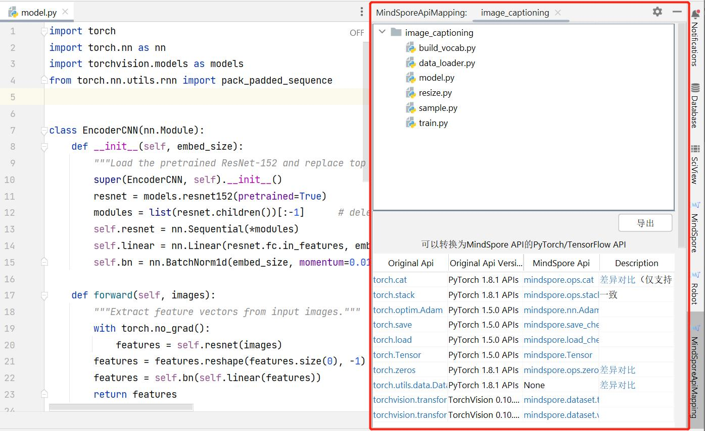

Model Analysis and Preparation

Reproducing Algorithm Implementation
Obtain the PyTorch reference code.
Analyze the algorithm, network structure, and tricks in the original code, including the method of data augmentation, learning rate attenuation policy, optimizer parameters, and the initialization method of training parameters, etc.
Reproduce the accuracy of the reference implementation, obtain the performance data of the reference implementation, and identify some issues in advance.
Please refer to Details of Reproducing Algorithm Implementation.
Analyzing API Compliance
Before practicing migration, it is recommended to analyze the API compliance in MindSpore’s migration code to avoid affecting code implementation due to the lack of API support.
The API missing analysis here refers to APIs in the network execution diagram, including MindSpore operators and advanced encapsulated APIs, and excluding the APIs used in data processing. You are advised to use third-party APIs, such as NumPy, OpenCV, Pandas, and PIL, to replace APIs used in data processing.
There are two methods to analyze API compliance:
Scanning API by MindSpore Dev Toolkit (recommended).
Querying the API Mapping Table.
Scanning API by Toolkit
MindSpore Dev Toolkit is a development kit supporting PyCharm and Visual Studio Code plug-in developed by MindSpore, which can scan API based on file-level or project-level.
Refer to PyCharm API Scanning for the tutorials of Dev Toolkit in PyCharm.

Refer to Visual Studio Code API Scanning for the tutorials of Dev Toolkit in Visual Studio Code.
Querying the API Mapping Table
Take the PyTorch code migration as an example. After obtaining the reference code implementation, you can filter keywords such as torch, nn, and ops to obtain the used APIs. If the method of another repository is invoked, you need to manually analyze the API. Then, check the PyTorch and MindSpore API Mapping Table.
Alternatively, the API searches for the corresponding API implementation.
For details about the mapping of other framework APIs, see the API naming and function description. For APIs with the same function, the names of MindSpore may be different from those of other frameworks. The parameters and functions of APIs with the same name may also be different from those of other frameworks. For details, see the official description.
Processing Missing API
You can use the following methods to process the missing API:
Use equivalent replacement
Use existing APIs to package equivalent function logic
Customize operators
Seek help from the community
Refer to Missing API Processing Policy for details.
Analyzing Function Compliance
During continuous delivery of MindSpore, some functions are restricted. If restricted functions are involved during network migration, before migration, functional compliance needs to be analyzed. It can be analyzed from the following points:
Dynamic shape.
Sparse.
Dynamic Shape
Currently MindSpore dynamic shape feature is under iterative development, and the dynamic shape functionality is not well supported. The following will give several scenarios where dynamic shape is introduced. During network migration, the presence of one of the following scenarios indicates the presence of dynamic shape in the network.
Several scenarios that introduces dynamic shapes:
Several solutions for dynamic shapes:
Input shape is not fixed: Dynamic shape can be converted to static shape through the mask mechanism. Mask mechanism example code is as follows:
def _convert_ids_and_mask(input_tokens, seq_max_bucket_length): input_ids = tokenizer.convert_tokens_to_ids(input_tokens) input_mask = [1] * len(input_ids) assert len(input_ids) <= max_seq_length while len(input_ids) < seq_max_bucket_length: input_ids.append(0) input_mask.append(0) assert len(input_ids) == seq_max_bucket_length assert len(input_mask) == seq_max_bucket_length return input_ids, input_mask
There is an API that triggers a shape change during network execution: If this scenario is encountered to introduce a dynamic shape, the essence is that the dynamically changing values need to be modified to a fixed shape to solve the problem. As in the case of the TopK operator, if K is changing during execution, a dynamic shape is introduced. Solution: You can fix a maximum number of targets, first get the confidence level of all targets by static shape, then choose the K number of highest targets as the result output, and other targets are removed by mask mechanism. Sample code such as the multiclass_nms interface of FasterRCNN.
Different branches of the control flow introduce changes on the shape: You can try to use equal, select operators to replace the if condition. Sample code is as follows:
# Code example for introducing control flow: if ms.ops.reduce_sum(object_masks)==0: stage2_loss = stage2_loss.fill(0.0) # modified code example stage2_loss = ms.ops.select(ms.ops.equal(ms.ops.reduce_sum(object_masks), 0), stage2_loss.fill(0), stage2_loss)
Sparse
MindSpore now supports the two most commonly used sparse data formats, CSR and COO, but due to the limited support for sparse operators at the moment, most of the sparse features are still limited. In this case, it is recommended to find whether the corresponding operator supports sparse computation first, and if not it needs to be converted to a normal operator. For details, see Sparse.
Recommended Functions and Features for Migration Scenarios
The main problems in the MindSpore network migration process are: accuracy problems and performance problems. The following section describes the relatively mature functions and features provided by MindSpore to localize these two problems.
Accuracy Problem
Common localization methods for accuracy problems can be found in: Preliminary Localization Guide for Accuracy Problems and Accuracy problem detailed localization and tuning guide. Here are a few of the main tools used for positioning accuracy issues:
Visualize the dataset.
TroubleShooter.
Dump.
Visualizing the Dataset
MindRecord is an efficient data format developed by MindSpore that allows you to first check that your data is processed correctly when accuracy issues arise. If the source data is TFRecord, it can be converted to MindRecord by TFRecord to MindRecord tool, and sent directly to the network for accuracy comparison. Use visualize TFRecord or MindRecord datasets tool to visualize the data for data checking.
TroubleShooter
TroubleShooter is a MindSpore web development debugging toolkit for providing convenient, easy-to-use debugging capabilities. The current functions supported by TroubleShooter are: comparing whether two sets of Tensor values (npy files) are equal; comparing whether the network outputs of PyTorch and MindSpore are equal; comparing the ckpt/pth of MindSpore and PyTorch, etc. See TroubleShooter application scenarios for details.
Dump
MindSpore provides Dump function, used to model training in the graph and operator input and output data saved to disk files, generally used for network migration complex problem location (eg: operator overflow, etc). It can be dumped out of the operator level data.
For getting Dump data, refer to: Synchronous Dump Step and Asynchronous Dump Step.
For analyzig Dump data, refer to: Synchronous Dump Data Analysis Sample and Asynchronous Dump Data Analysis Sample
See Dump for details.
Performance Issues
Common methods for locating performance problems can be found in: Performance Tuning Guide. Here are a few of the main tools available for locating performance issues:
Profiler.
MindSpore Insight.
Profiler
Profiler can record information such as operator time consumption during the training and inference process into a file, and mainly provides the host execution of the framework, as well as the Profiler analysis function of operator execution to help users debug neural network performance more efficiently. Currently MindSpore offers two ways to enable Profiler: Modify the script to get performance data and Environment variables get access to performance data.
MindSpore Insight
MindSpore Insight is a visual debugging and tuning tool to help users get better model accuracy and performance. After obtaining performance data through Profiler, you can use MindSpore Insight to visualize the data and then view the training process, optimize model performance, and debug accuracy issues. An introduction to MindSpore Insight startup and other uses can be found at MindSpore Insight related commands. After visualizing the data, the data can be analyzed by parsing performance data for data analysis. More introduction can be found in MindSpore Insight documentation.
Dynamic and Static Graphs
Currently, there are two execution modes of a mainstream deep learning framework: a static graph mode (Graph) and a dynamic graph mode (PyNative).
In static graph mode, when the program is built and executed, the graph structure of the neural network is generated first, and then the computation operations involved in the graph are performed. Therefore, in static graph mode, the compiler can achieve better execution performance by using technologies such as graph optimization, which facilitates large-scale deployment and cross-platform running.
In dynamic graph mode, the program is executed line by line according to the code writing sequence. In the forward execution process, the backward execution graph is dynamically generated according to the backward propagation principle. In this mode, the compiler delivers the operators in the neural network to the device one by one for computing, facilitating users to build and debug the neural network model.
Calling the Custom Class
In static graph mode, you can use jit_class to modify a custom class. You can create and call an instance of the custom class, and obtain its attributes and methods.
jit_class is applied to the static graph mode to expand the support scope of static graph compilation syntax. In dynamic graph mode, that is, PyNative mode, the use of jit_class does not affect the execution logic of PyNative mode.
Automatic Differential
Automatic differentiation can calculate a derivative value of a derivative function at a certain point, which is a generalization of backward propagation algorithms. The main problem solved by automatic differential is to decompose a complex mathematical operation into a series of simple basic operations. This function shields a large number of derivative details and processes from users, greatly reducing the threshold for using the framework.
Mixed Precision
Generally, when a neural network model is trained, the default data type is FP32. In recent years, to accelerate training time, reduce memory occupied during network training, and store a trained model with same precision, more and more mixed-precision training methods are proposed in the industry. The mixed-precision training herein means that both single precision (FP32) and half precision (FP16) are used in a training process.
Auto Augmentation
MindSpore not only allows you to customize data augmentation, but also provides an automatic data augmentation mode to automatically perform data augmentation on images based on specific policies.
Gradient Accumulation
Gradient accumulation is a method of splitting data samples for training neural networks into several small batches by batch and then calculating the batches in sequence. The purpose is to solve the out of memory (OOM) problem that the neural network cannot be trained or the network model cannot be loaded due to insufficient memory.
Summary
Scalars, images, computational graphs, training optimization processes, and model hyperparameters during training are recorded in files and can be viewed on the web page.
Debugger
The MindSpore debugger is a debugging tool provided for graph mode training. It can be used to view and analyze the intermediate results of graph nodes.
Golden Stick
MindSpore Golden Stick is a model compression algorithm set jointly designed and developed by Huawei Noah’s team and Huawei MindSpore team. It contains basic quantization and pruning methods.